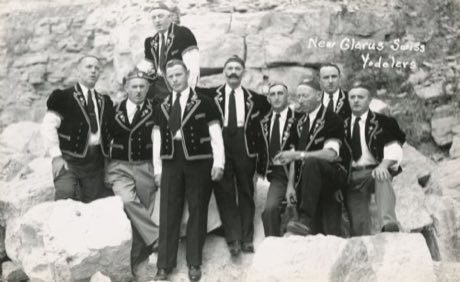
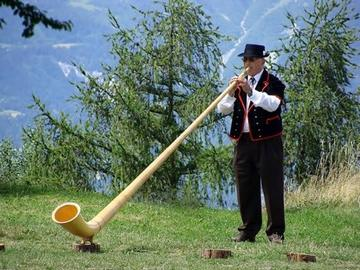
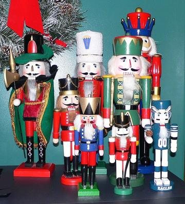

Home / Classical Worlds / Northern and Eastern Europe
Playable heritage gameAlpine Yodel
Also known as Jodel
The voice of the high pastures: a call that leaps between the full chest voice and the light head voice and lets the valley answer. Sing the notes of an Alpine call and cross the break in time.

How to play
- Each band is one sung note. The lower, warm bands are the chest voice; the upper, cool bands are the head voice. The zigzag between them is the break.
- A frame closes on the band that is about to be sung; sing it on the beat.
- Cross the break cleanly: the voice flips over in an instant, and the far side of the valley sends the call back.
Rules at a glance
- Each band is one sung note: warm lower bands are the chest voice, cool upper bands the head voice.
- A note is perfect within about 70 ms of its beat and good within about 160 ms; later is a miss.
- A new note ends the one before; an extra stroke between notes costs a few points.
- Score is the share of the maximum; three stars at 90, 70 and 40 percent.
- The round ends after the last note of the second pass.
About the tradition
Herders in the Alps used the call to carry across valleys; in concert it became a song form of its own. The voice here is our own synthesis, not a recording.
Origins
Usually placed in the era of Classical Worlds (about 1000 BCE to 500 CE), although its exact origins are uncertain, within the cultural world of Northern and Eastern Europe.
Credits
- Photo: Swiss yodelers, Moen Photo Service, public domain (Wikimedia Commons).
- Photo: Moen Photo Service, La Crosse, WI, Public domain, source on Wikimedia Commons
- Text: CC BY-SA 4.0, World Heritage Games.
Sources

Get the app
Alpine Yodel is one of 9 instruments and voices in the Wind & Voice of the World app for Android. Submitted to Google Play; in review. Store links appear here the day it goes live. One app, many traditions, no account needed.
More games to play

Alphorn Mountain Echo
Switzerland · Musical instrumentsPlay preview · in the Wind & Voice of the World app

Blacksmith's Forge
United Kingdom +4 · Crafts and makingPlay preview · in the Woodcraft & Metal of the World app
Ribbon-Pole Plaiting Dance
United Kingdom +4 · DancesPlay preview · in the Music & Dance of the World app

More from Switzerland

Clockwork Movement Builder
Germany +2 · Puzzles and mind games

Stone put
Bhutan +1 · Dexterity and skill games
Swiss wrestling
Switzerland · Wrestling and martial sports